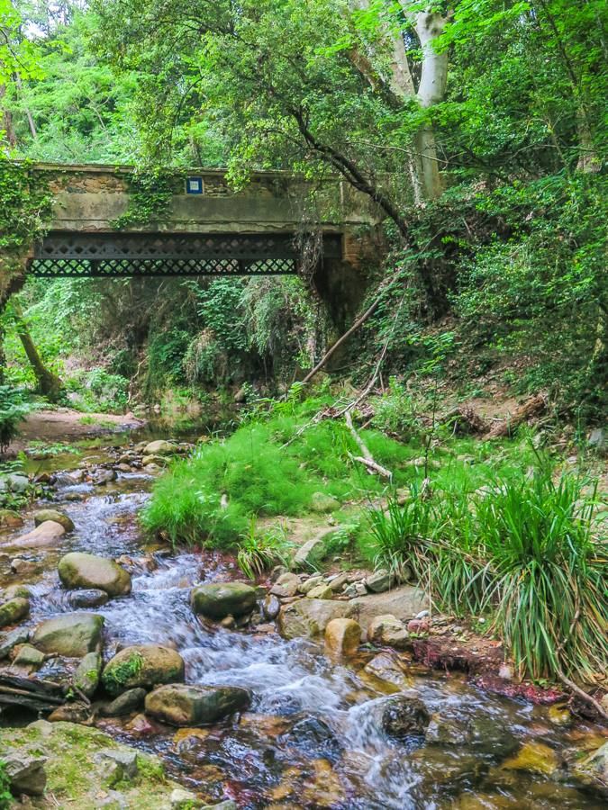

Ruta · Gualba
Aquesta ruta convida a recórrer els carrers i entorns del poble de Gualba tot descobrint l’obra d’un veí ben especial: en Jaume Salichs Sanitjas . Apassionat per la ciència, l’art i el patrimoni,…